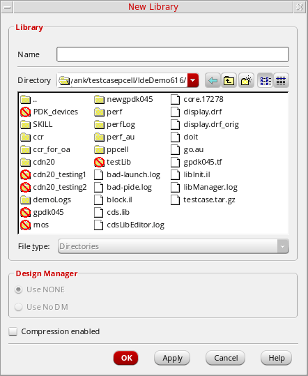
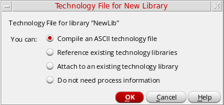
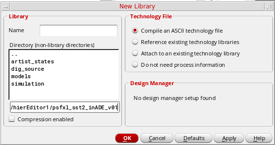
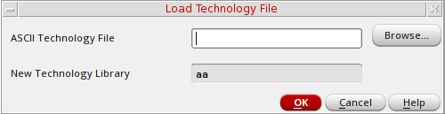
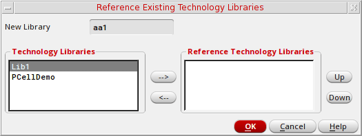
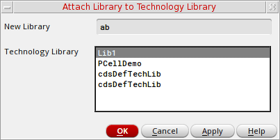

6
Creating a Library
Library Manager helps you in creating new libraries in a design project. You can create a library using any of the following methods:
Creating a New Library in the Library Manager
To create a new library using the Library Manager, follow these steps:
-
In the Library Manager, choose File – New – Library. Alternatively, you can click inside the Library list box and press
Ctrl+Non the keyboard.
You can also type the name of the library in the Library field of the Library Manager window and pressCtrl+Nto open the New Library form. In this case, the Name field in the New Library form is automatically populated with the name that you have entered in the Library field of the Library Manager window.
The New Library Form is displayed.
 -
In the Name field, type the name of the library you want to create.
The new library name cannot be the same as another library. -
Use the Directory navigation tools (list boxes and toolbar buttons) to specify the destination directory in which you want to create the new library. You can also type a directory path in the Directory field. You must have write permission in the directory where you want to create a library.If you want the library to be under design management control, you must create it in a managed project area. For additional information about creating managed libraries, see the Virtuoso Software Licensing and Configuration Guide.
-
In the Design Manager group box, specify whether you want to use a design management system.
-
If you want to use your design management system, select Use <design management system> (the default).
When you have the Design Management setup for the new library, the default DM choice can be specified by a cdsenv variable, "ddserv.lib" "dmChoice". If that value matches one of the DM specifications given for theDMTYPEin thecdsinfo.tagfile, then the cdsenv value is picked as the default in the New Library form.
The software suggests a design management system if it has been specified with the DMTYPE property in acdsinfo.tagfile that is not library-specific but included in the search path. For information about the locations at which this file can reside and how the search mechanism determines the value, see The cdsinfo.tag File Location in the Cadence Application Infrastructure User Guide. -
If you do not want to use design management, select Use No DM.
-
If you want to use your design management system, select Use <design management system> (the default).
- You can select the Compression Enabled check box to write OpenAccess data to this library in a compressed format. For more information, see Supporting OA Compressed Data Using Library Manager.
-
Click OK.
The Technology File for New Library form is displayed (see “Technology File for New Library Form”).
 - Choose one of the following technology file options:
For more information about technology files, see
Creating a New Library Using the CIW
The process for creating a new library from the CIW is different from creating a new library directly from the Library Manager.
To create a new library from the CIW, follow these steps:
-
From the CIW, select File – New – Library.
The New Library form is displayed.
 - Enter a Name for your new library.
-
(Optionally) Choose the name of the Directory (non-library directories) that you want to store your library. Otherwise, you can specify the library path in the text box under the Directory (non-library directories) section.
- Choose one of the following Technology File options:
-
(Optionally) If available, select the Design Manager to use.
A list box will be displayed offering you the design management systems available if there is more than one that can be selected.
When you have the Design Management setup for the new library, the default DM choice can be specified by a cdsenv variable, "ddserv.lib" "dmChoice". If that value matches one of the DM specifications given for theDMTYPEin thecdsinfo.tagfile, then the cdsenv value is picked as the default in the New Library form.
The software suggests a design management system if it has been specified with the DMTYPE property in acdsinfo.tagfile that is not library-specific but included in the search path. For information about the locations at which this file can reside and how the search mechanism determines the value, see The cdsinfo.tag File Location in the Cadence Application Infrastructure User Guide.
If there is no design management system available, No design manager setup found will be displayed. - You can select the Compression Enabled check box to write OpenAccess data to this library in a compressed format. For more information, see Supporting OA Compressed Data Using Library Manager.
- Click the OK button.
-
Depending on the Technology File option you selected above, you will be displayed with either: the Load Technology File form (see Compiling an ASCII Technology File), the Reference Existing Technology form (see Referencing Existing Technology Libraries), or the Attach Library to an Existing Technology File form (see Attaching to an Existing Technology Library).
Alternatively, if no technology file is be associated with the new library, the library will automatically be listed in the Library list box of the Library Manager.
Supporting the oazip Utility to Compress/Decompress Databases
OpenAccess 22.42 and later releases support the ability to save the design databases in a library in a compressed form. Tools based on OpenAccess 22.41 or earlier releases (such as IC6.1.5), may need to have the designs in the library decompressed with the oazip utility before the designs can be accessed.
This utility provides the following functionality:
- It processes the OpenAccess databases in a library and compresses them. The compression control value of the library is updated.
- It processes the OpenAccess databases in a library and decompresses the ones that are in compressed form. The compression control value of the library is reset or updated.
- It provides the value of the compression control attribute of a library.
- It scans the OpenAccess databases in a library and reports the databases that do not match the compression control attribute of the library.
- It scans the OpenAccess databases in a library and updates any databases that did not match the compression control attribute of the library.
Command Syntax
To run oazip, enter the following:
oazip -lib library {-compress|-decompress|-check|-query|-update} [Optional Arguments]
Arguments
You can use the -help or -h argument to display command line help. The command line arguments are described in the table below.
Supporting OA Compressed Data Using Library Manager
While creating a library, you can select the Compression enabled check box to compress the library, which, in turn, reduces disk storage space, offers faster load, and saves transfer time.
Once a new library is created with the Compression enabled check box selected, the Library Manager window shows a new compression icon corresponding to the compressed libraries.
To view this icon, right-click the first library in the Library list box and select the [header options] – Show compression enabled option.
The compression icon is displayed for compressed libraries. Placing the pointer on a compressed library displays a tooltip indicating the compression status as enabled.
showCompressionDefault value in .cdsenv sets the compression zip icon to be displayed as default if the $HOME/.libmgr file is either missing or has no showCompression value. For example, cdsLibManager.showCompression: 1.
Once the value in the $HOME/.libmgr file is saved as either 0 or 1, then that value is considered instead of the .cdsenv value.
To remove the compression icon from the Library Manager window, you need to right-click the Library header and deselect the Show compression enabled option.
Apart from this, there has been the following enhancements made to the Library Manager window.
Status bar displays a name of the currently selected library, whether compressed or not, and the approximate free disk space of the volume holding the library at the lower-right corner of the window. For example, values in Megabytes (MB), Gigabytes (GB), or Terabytes (TB) of the free space is displayed.
You can also resize all the list boxes together by pressing and holding the Ctrl key and dragging the mouse pointer on one of the new list box divider. However, without using the Ctrl key pressed, only two adjacent list boxes would be sized at a time.
Compiling an ASCII Technology File
To compile a new technology file and attach it to your new library, follow these steps:
- From the Technology File for New Library form, select Compile an ASCII technology file.
-
Click OK.
The Load Technology File form appears.
Your new library name appears in the New Technology Library field. -
In the ASCII Technology File field, type the path to a technology file.
You can use your own technology file or one of the following templates from the sample technology files shipped with all Virtuoso applications:
where install_dir is the directory in which you installed the Cadence software.install_dir/tools/dfII/samples/default.tfinstall_dir/tools/dfII/samples/mpu.tf
If you want to create a design library with a special technology file but do not know the path to the technology file, type the full hierarchical path to the default technology filedefault.tf. Later, you can use the Load command to modify the technology file information. Thedefault.tffile acts as a placeholder for your technology file. -
Click OK.
The new design library is created in the specified directory.
Referencing Existing Technology Libraries
To create a new technology file and reference it to an existing technology library, follow these steps:
- From the Technology File for New Library form, select Reference existing technology libraries.
-
Click OK.
The Reference Existing Technology Libraries form appears.
 -
Using the arrow buttons (-->, <--), or by double clicking, move the technology libraries that you want your new library to reference from the Technology Libraries section to the Reference Technology Libraries section.
-
You can change the technology library reference priority by selecting a library in the Reference Technology Libraries section and choosing to the Up or Down buttons to change its priority position.
-
Click OK.
Your new library will now be created, referencing the selected technology libraries.
Attaching to an Existing Technology Library
To attach your new library to a specific technology file, follow these steps:
- On the Technology File for New Library form, select Attach to an existing technology library.
-
Click OK.
The Attach Library to Technology Library form appears. The new library name appears in the New Design Library field. Technology libraries in your library path appear in the Technology Library list box.
 -
In the Technology Library list box, choose the technology library to which you want to attach your new library.
If the defaultAttachTech environment variable specifies a valid technology library, it appears selected by default in the list. - Click OK.
The new library is attached to the specified technology library.
Excluding Process Information
If you do not plan to design layouts, you do not need a technology file.
To create a new library without specifying a technology file, do the following:
Library Manager creates the specified new library. (Although you will not use a technology file, the system automatically attaches the default technology file default.tf when you open the library with a Virtuoso product.)
Return to top